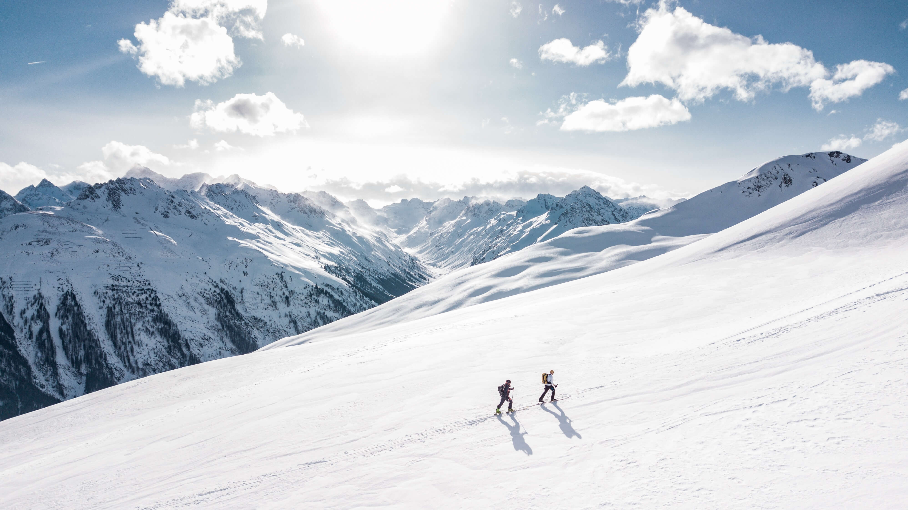

Golden Lakes, USA

In the heart of the Pacific Northwest, the Golden Lakes provide an incredible landscape to canoe or kayak through. With the larger lakes up to 30miles long, paddle through one of the most verdant and beautiful regions of North America.
Lake Silver, Italy
Tour a serene freshwater lake in northern Italy in your own sailboat. Fully guided and assisted as required, you will be given a crash course in sailing alonside a tour of the region. The boat is fully equipped for a comfortable stay and may accommodate four.
Great Salt Lake, USA
One of the largest saltwater lakes in the world, this natural wonder in Utah is a memorable experience for those looking for sailing with a difference. Kayaking, sailing and fishing are all popular, with a cosy cabin nearby.
Noguera Pallaresa, Spain

Possibly the most exhilarating rapids in Europe. Enjoy four days on the water,
followed by three days to enjoy wild swimming in the serene nearby lakes.
Recommended to advanced paddlers only.
Eibsee, Germany
One of our most popular destinations, Eibsee is famous for being the place to learn how to jet ski like a pro. Enjoy one of the most thrilling watersports, fully guided, then at night enjoy the town's local beers.
Raja Ampat, Indonesia
Come see one of the most vibrant reefs on the planet. Diving, snorkelling - spend your days exploring the water. Optional courses include underwater photography, paddle boarding and others.
Palawan, Philippines

Often called paradise on earth, this archipelago is famous for its fishing, diving and wild swimming. Between the beach and its popular hiking trails, there is no fear of running out of things to do.
Canggu, Bali
Perfect for beginners to intermediate surfers, this trip will give you classes with expert tutors daily, with your afternoons free for practice and exploring everything the vibrant resort has to offer.
Byron Bay, Australia
The ultimate surfing vacation.
One of the most beautiful beaches in the world.
Our beachouses are just off the beach, with a private deck area.
Each house is fully furnished and can accommodate up to six people.
Swiss Alpine trail
Take these guided trails and discover the mountains in the summer, beautiful lakes, rare flora and villages full of fresh, local food. Everyone who takes this trip remarks on feeling reinvigorated.
Cathedral Rock Trail, Arizona

If you like a challenge, hiking in the heat of the canyons might be your next trip. View the awe-inspiring natural rock formations and journey through the Camelback Mountains.
Sapa, Vietnam

With trails for all abilities, local guides will show you mountains, waterfalls, rivers and more. Stay in local villages and enjoy being completely off the beaten track.
San Miguel de Allende, Mexico

Every building is magical in this neo-Gothic-cum-Spanish-colonial style city. It's also remarkably easy to navigate on foot. Let us guide you through the most exciting restaurants and show you the most stunning sights.
Cairo, Egypt

Come for the pyramids and stay for everything else Cairo has to offer. With a full itinerary included, you will come away with a whole different perspective on this city.
New York, USA

If you want every moment of your trip to New York City planned, we have you covered. Mix of the popular sights and off the beaten track, staying in a 5* hotel right in the heart of the city.
Banff, Canada
Get guidance from some of the best instructors out there, or hit the slopes solo. Accommodation includes deluxe ski lodge with resident housekeeper.
Lapland, Finland

Take the seasonal ski experience for Christmas with a difference. Includes reindeer, mulled wine, husky rides and sometimes event he Northern Lights make an appearance.
Winter in Japan

Visit a tranquil ryokan and enjoy the healing hot springs. We take pride locating the best inns with the mostmemorable meal experiences.
Bergen, Norway

Take in the fjords, the mountains and the friendly city of Bergen. Ideal to visit in the colder months for an unforgettable winter holiday. Boat cruises and experienced tour guides provide a well planned holiday.